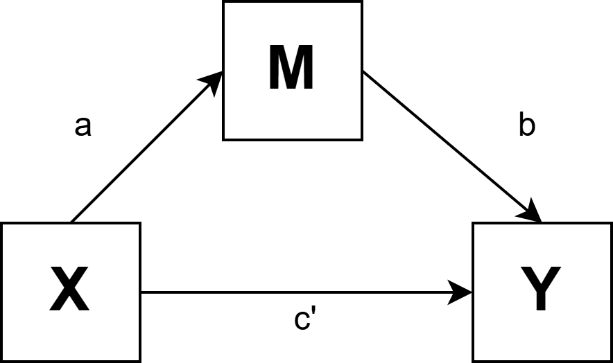
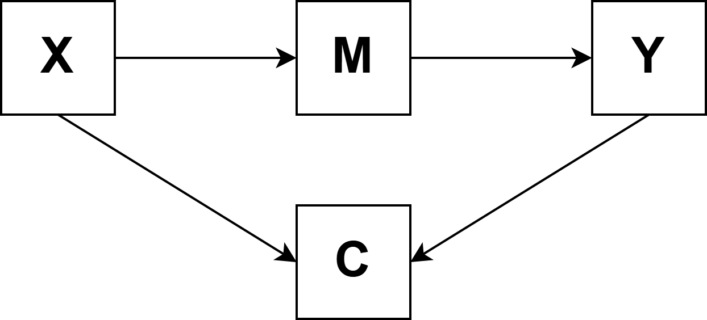

Analisis Mediasi
Statistik Dasar dalam Penelitian Psikologi
2026-04-23
Outline
- Apa itu mediasi?
- Model mediasi sederhana
- Pendekatan: kausalitas a la Baron & Kenny vs bootstrapping
- Implementasi di jamovi (medmod)
- Interpretasi indirect effect
- ⚠️Peringatan⚠️: mediasi dari data cross-sectional
- Collider bias
Apa itu mediasi?
Mediasi: “bagaimana” dan “mengapa”
Mediasi menjelaskan mekanisme di balik hubungan antara dua variabel — bagaimana atau mengapa variabel X memengaruhi variabel Y.
Contoh: Mengapa status sosial-ekonomi (X) berhubungan dengan prestasi akademik (Y)?
- Mungkin karena SES yang lebih tinggi → akses lebih baik ke sumber belajar (M) → prestasi lebih baik (Y)
- Variabel M (akses sumber belajar) adalah mediator
Note
Mediasi berbeda dari moderasi. Mediasi menjelaskan mekanisme hubungan X → Y. Moderasi menjelaskan kondisi di mana hubungan X → Y lebih kuat atau lebih lemah. Keduanya sering dikombinasikan dalam model moderated mediation atau mediated moderation.
Model mediasi sederhana (simple mediation)
Dalam model mediasi sederhana, terdapat tiga variabel:
- X: variabel independen (prediktor)
- M: mediator
- Y: variabel dependen (hasil)
Dan tiga jalur (path) utama:
- Jalur a: X → M
- Jalur b: M → Y (mengontrol X)
- Jalur c’ (c-prime): X → Y mengontrol M (direct effect)

Total effect c = c’ + (a × b)
Efek tidak langsung (indirect effect): \(a \times b\)
Ini adalah besaran efek X pada Y yang dimediasi melalui M.
Pendekatan analisis mediasi
Baron & Kenny (1986): pendekatan klasik
Metode klasik Baron & Kenny menetapkan empat syarat untuk klaim mediasi:
- X secara signifikan memprediksi Y (total effect signifikan)
- X secara signifikan memprediksi M (path a signifikan)
- M secara signifikan memprediksi Y mengontrol X (path b signifikan)
- Ketika M dimasukkan ke model, efek X pada Y berkurang (mediasi parsial) atau hilang (mediasi penuh)
Pendekatan Baron & Kenny sudah usang dan tidak direkomendasikan lagi.**
Syarat (1) tidak perlu dipenuhi — indirect effect bisa ada tanpa total effect yang signifikan (terutama jika ada mediator berganda dengan arah berlawanan). Uji Sobel (untuk signifikansi indirect effect) juga mengasumsikan normalitas yang sering dilanggar. Gunakan bootstrapping sebagai gantinya.
Bootstrapping: pendekatan modern
Bootstrapping adalah metode resampling yang mengestimasi distribusi indirect effect (a×b) langsung dari data, tanpa mengasumsikan distribusi normal.
Cara kerjanya:
- Ambil sampel berulang (bootstrap samples) dari data asli dengan pengembalian — biasanya 5.000 atau 10.000 kali
- Hitung indirect effect (a×b) untuk setiap sampel
- Gunakan distribusi 5.000 nilai a×b untuk membangun confidence interval (BC-CI) untuk indirect effect
Tip
Jika 95% bootstrap CI untuk indirect effect tidak mencakup nol, kita memiliki bukti bahwa indirect effect secara statistik berbeda dari nol — tanpa perlu mengasumsikan normalitas. Ini adalah cara yang direkomendasikan untuk menguji signifikansi mediasi.
Implementasi di jamovi (medmod)
Memasang modul medmod di jamovi
medmod adalah modul jamovi untuk analisis mediasi dan moderasi berbasis bootstrapping.
Instalasi:
- Di
jamovi, klik ikon + (modul) di pojok kanan atas - Cari
medmoddi jamovi library, lalu klik Install - Setelah terpasang, modul
medmodakan muncul di menu utama jamovi
Note
Jika modul medmod tidak tersedia, analisis mediasi bisa dilakukan secara manual melalui regresi bertingkat: (1) regresikan M pada X, (2) regresikan Y pada X dan M, kemudian hitung indirect effect = koefisien jalur a × koefisien jalur b.
Contoh: stres, dukungan sosial, dan wellbeing
Hipotesis: Beban akademik yang tinggi (X = beban) menurunkan wellbeing (Y = wellbeing) karena mengurangi persepsi dukungan sosial (M = dukungan_sosial).
Dataset: mediasi_akademik.omv (N = 500 mahasiswa)
Langkah di jamovi (medmod):
- Klik menu medmod Mediation Analysis
- Masukkan variabel:
- Predictor (X): beban
- Mediator (M): dukungan_sosial
- Outcome (Y): wellbeing
- Di opsi Estimation, centang Bootstrap CI dan set Bootstrap samples = 5000
- Centang Indirect effect, Direct effect, Total effect
Membaca output mediasi
Ringkasan hasil yang diharapkan:
| Efek | Koefisien | 95% BC-CI | Signifikan? |
|---|---|---|---|
| Total effect (c) | −0.42 | [−0.49, −0.36] | Ya |
| Direct effect (c’) | −0.16 | [−0.23, −0.09] | Ya |
| Indirect effect (a×b) | −0.26 | [−0.31, −0.21] | Ya |
Interpretasi: Beban akademik menurunkan wellbeing (total c = −0.42). Sebagian efek ini dimediasi melalui berkurangnya dukungan sosial yang dipersepsi (indirect a×b = −0.26, 95% CI tidak mencakup nol). Namun masih ada direct effect yang signifikan (c’ = −0.16), menunjukkan mediasi parsial.
Interpretasi indirect effect
Proporsi mediasi
Selain signifikansi, kita juga bisa menghitung proporsi total efek yang dimediasi:
\[\text{Proporsi mediasi} = \frac{a \times b}{c} = \frac{-0.26}{-0.42} \approx 0.61\]
Artinya, sekitar 61% dari efek beban akademik pada wellbeing bekerja melalui mekanisme dukungan sosial.
Note
Proporsi mediasi bisa melebihi 1 atau bernilai negatif (disebut inconsistent mediation) jika direct effect dan indirect effect berlawanan arah. Dalam kasus seperti ini, interpretasinya lebih kompleks.
Effect size untuk mediasi:
\[\kappa^2 = \frac{a \times b}{\text{varians maksimal a×b yang mungkin}}\]
Nilai \(\kappa^2\) antara 0–1. Konvensi: 0.01 kecil, 0.09 sedang, 0.25 besar (Preacher & Kelley, 2011). Pada contoh di atas, jamovi melaporkan \(\kappa^2 \approx 0.18\) — termasuk efek sedang mendekati besar.
⚠️Peringatan⚠️: mediasi dan kausalitas
Data cross-sectional dan klaim kausalitas
Analisis mediasi dari data cross-sectional tidak bisa membuktikan kausalitas
Dalam mediasi, kita mengklaim: X menyebabkan M, dan M menyebabkan Y. Ini adalah klaim kausal yang kuat. Namun data cross-sectional hanya mengukur semua variabel pada satu titik waktu yang sama — tidak ada cara untuk menetapkan temporal ordering/urut-urutan kejadian (apa yang terjadi lebih dulu?).
Masalah spesifik dengan mediasi cross-sectional:
- Urutan waktu tidak jelas: apakah X benar-benar terjadi sebelum M, dan M sebelum Y?
- Reverse causation: mungkin Y → M → X, atau M → X → Y
- Confounding: variabel ketiga yang tidak diukur bisa menyebabkan ketiganya sekaligus
Contoh masalah temporal ordering
Kembali ke contoh beban akademik → dukungan sosial → wellbeing:
Kita ukur ketiga variabel dalam satu survei pada hari yang sama. Mungkin saja:
- Mahasiswa dengan wellbeing yang rendah lebih cenderung merasakan beban sebagai berat dan dukungan sebagai kurang (Y memengaruhi persepsi terhadap X dan M)
- Dukungan sosial yang rendah menyebabkan mahasiswa mengambil lebih banyak mata kuliah untuk “mengisi waktu” (M → X, bukan X → M)
Note
Pengujian mediasi yang lebih baik membutuhkan desain longitudinal (X diukur sebelum M, M diukur sebelum Y) atau, yang terbaik, melalui eksperimen di mana X (dan M) dimanipulasi secara acak dan efeknya pada M dan Y diamati sepanjang waktu.
Meskipun, pengujian secara longitudinal hanya bisa mengendalikan confounding yang time-invariant saja. Apabila variabel cofounding berubah sepanjang waktu, maka desain longitudinal tidak bisa mengendalikan efek confounding.
Ketika mediasi cross-sectional masih berguna
Meski terbatas secara kausal, analisis mediasi cross-sectional mungkin bisa bermakna jika:
- Digunakan untuk mengeksplorasi mekanisme yang akan diuji lebih lanjut dengan desain yang lebih kuat
- Dikombinasikan dengan argumen teoritis yang kuat tentang urutan temporal
- Variabel X adalah atribut stabil atau manipulasi eksperimental (bukan variabel yang berfluktuasi)
- Disajikan dengan language yang jujur — “konsisten dengan mediasi” bukan “membuktikan mediasi”
Cara yang disarankan untuk melaporkan mediasi cross-sectional:
“Hasil analisis bootstrapping menunjukkan indirect effect yang signifikan (a×b = −0.26, 95% BC-CI [−0.31, −0.21]), yang artinya ditemukan pola yang konsisten dengan model mediasi, di mana dukungan sosial mungkin memediasi hubungan antara beban akademik dan wellbeing. Namun, mengingat desain cross-sectional, interpretasi kausalitas tidak dapat dilakukan.”
Collider bias
Apa itu collider?
Collider adalah variabel yang menerima panah dari dua variabel lain sekaligus dalam model kita.
Variabel C adalah collider karena dipengaruhi oleh X dan Y.
Masalah:
Jika kita mengontrol collider, misalnya memasukkannya ke regresi, atau memilih sampel berdasarkan nilai C tertentu, kita secara tidak sengaja menciptakan hubungan palsu antara X dan Y, meskipun keduanya tidak benar-benar berhubungan.
Contoh: Apakah kecerdasan berkorelasi negatif dengan kerja keras di kalangan mahasiswa universitas bergengsi?
- Masuk universitas bergengsi (C) dipengaruhi oleh kecerdasan (X) dan kerja keras (Y)
- Ketika kita hanya mengamati mahasiswa di sana, kita tanpa sadar mengontrol C
- Hasilnya: mahasiswa yang sangat cerdas tampak kurang pekerja keras — padahal di populasi umum tidak demikian
Collider bias dalam analisis mediasi
Dalam konteks mediasi, collider bias muncul ketika ada variabel yang dipengaruhi oleh X dan M (atau M dan Y) lalu kita masukkan ke model sebagai kontrol.

Mengontrol C di sini akan merusak estimasi jalur b (M → Y) dan indirect effect.
Ingat
Hati-hati dengan variabel kontrol yang “masuk akal” secara substantif. Sebelum menambahkan variabel kontrol ke model mediasi, tanyakan: “Apakah variabel ini bisa dipengaruhi oleh X atau M?” Jika ya, jangan dikontrol, justru akan menyebabkan collider bias.
Note
Collider bias adalah salah satu alasan mengapa analisis mediasi memerlukan teori kausal yang eksplisit (misalnya melalui DAG — Directed Acyclic Graph), bukan sekadar menambahkan variabel kontrol secara asal-asalan.
Latihan: analisis mediasi di jamovi
Buka dataset mediasi_akademik.omv, kemudian uji apakah dukungan sosial memediasi hubungan antara beban akademik dan wellbeing:
- Inspeksi terlebih dahulu: buat scatterplot untuk pasangan beban–dukungan_sosial dan dukungan_sosial–wellbeing
- Jalankan mediasi dengan bootstrap CI (5.000 sampel)
- Bandingkan total effect, direct effect, dan indirect effect
- Hitung proporsi mediasi secara manual: (a×b) / c
Pertanyaan untuk didiskusikan:
- Seandainya ini adalah data longitudinal (X diukur 3 bulan sebelum M dan Y), apa yang berubah dalam cara kalian menginterpretasi hasilnya?
- Adakah variabel ketiga yang mungkin menjadi confounder dalam hubungan ini?
- Bagaimana kalian akan mendesain studi eksperimental untuk menguji klaim mediasi ini?
Ada pertanyaan❓

Note
- Paparan disusun dengan menggunakan dan Quarto dengan template dari UNAIR Theme.
- Kontak saya via amelia.zein@psikologi.unair.ac.id